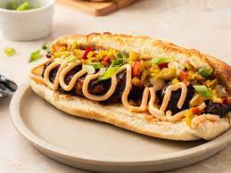

Kansas City Style "Burnt Ends" Philly Cheesesteak

A twist on a Philly Cheesesteak featuring Kansas City style "burnt ends" barbecue and traditional cheesesteak toppings like sauteed onions, pickled peppers, and cheese whiz.
Ingredients
- 3 ½ pounds beef chuck roast (sholid be very well-marbled)
- 3 tablespoons barbecue dry rub
- ½ cup Kansas City style BBQ sauce
- 4 sandwich or hoagie rolls
- 1 (8 ounce) container cheese whiz, or sliced cheese as needed
- ⅔ cup sautéed onions
- ⅔ cup chopped jarred pickled peppers
- 2 tablespoons sliced green onions